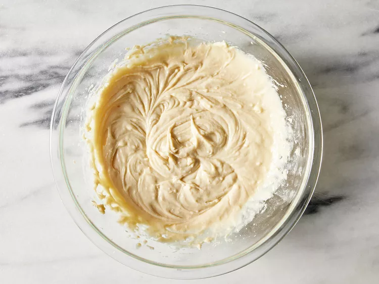

Home
Marble Cake
If you’re looking for a fluffy, moist marble cake that is going to WOW your family and friends, then this recipe is it! Soft layers of vanilla and chocolate cake are combined together and topped with a whipped chocolate ganache frosting – YUM! It comes together so easily using only one recipe that’s based on my 5 star rated vanilla cake recipe, which I promise will not disappoint!
Ingredients
- 2 cups all-purpose flour
- 1 cup white sugar
- 1 cup milk
- 2 large eggs
- 1/2 cup butter, softened
- 2 teaspoons baking powder
- 1 teaspoon vanilla extract
- 1/2 teaspoon salt
- 2 tablespoons unsweetened cocoa powder
Steps
- Preheat the oven to 350 degrees F (175 degrees C). Grease and flour a 9-inch round pan.
- Place flour, sugar, milk, eggs, butter, baking powder, vanilla, and salt into a large bowl.
- Mix slowly to moisten, then beat with an electric mixer at medium speed for about 2 minutes until smooth.

- Reserve 3/4 cup batter; pour remaining batter into the prepared pan.
- Stir cocoa into reserved batter until even in color.
- Drop chocolate batter by large spoonfuls on top of vanilla batter; swirl cocoa batter into white batter using a knife to create a marbled appearance.
- Bake in the preheated oven until a toothpick inserted into the center comes out clean, about 30 to 35 minutes. Cool briefly on a wire rack before inverting carefully onto a serving plate or cooling rack. Let cool completely.